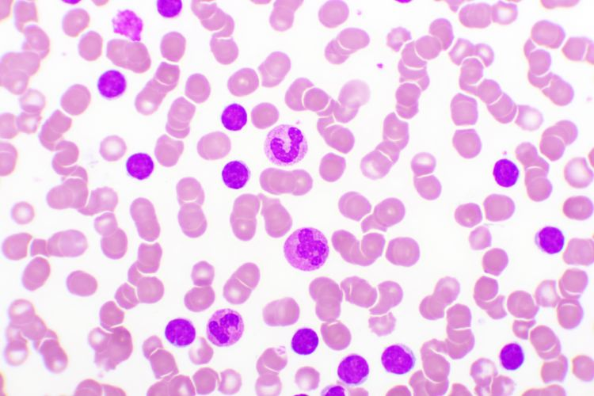

In this project, raw housing data is transformed in SQL Server to make it more usable for analysis by cleaning
date formats, filling missing addresses, splitting fields, standardizing values, and removing duplicates.
In this project we use SQL Server to explore global
COVID 19 data.

Tableau Dashboards for COVID 19.

In this project, single-cell RNA sequencing data from Chronic Lymphocytic Leukemia (CLL) samples is processed to enable predictive analysis.
This Tableau Dashboard visualizes key metrics like total sales, profit, and quantities sold.
It provides an interactive, comparative view of performance across multiple years, offering valuable insights into business operations.